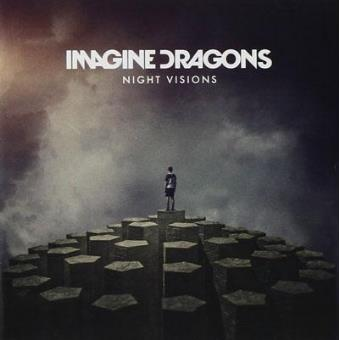
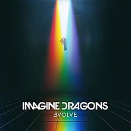
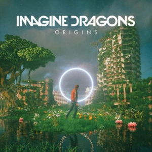

- 
-
1
Radioactive
2 Tiptoe
3 It's Time
4 Demons
5 On Top Of The World
6 Amsterdam
7 Hear Me
8 Every Night
9 Bleeding Out
10 Underdog
-
11
Nothing Left to Say / Rocks
12 Cha‐Ching (Till We Grow Older)
13 Working Man
14 My Fault
15 Round and Round
16 The River
17 America
18 Selene
19 Fallen
20 Cover Up
21 Love of Mine (Night Visions demo)
22 Bubble (demo)
-

-
1
Shots
2 Gold
3 Smoke And Mirrors
4 I’m So Sorry
5 I Bet My Life
6 Polaroid
-
7
Friction
8 It Comes Back To You
9 Dream
10 Trouble
11 Summer
12 Hopeless Opus
13 The Fall
- 
-
01
I Don't Know Why
02 Whatever It Takes
03 Believer
04 Walking The Wire
05 Rise Up
06 I'll Make It Up To You
07 Yesterday
-
08
Mouth of the River
09 Thunder
10 Start Over
11 Dancing In the Dark
12 Levitate
13 Not Today
14 Believer (Kaskade Remix)
- 
-
1 Natural
2 Boomerang
3 Machine
4 Cool Out
5 Bad Liar
6 West Coast
7 Zero
-
8
Bullet in a Gun
9 Digital
10 Only
11 Stuck
12 Love
13 Birds
14 Burn Out
15 Real Life